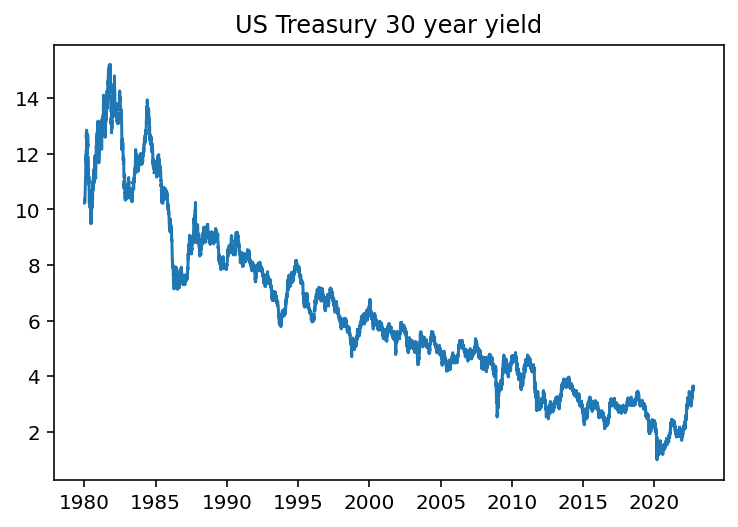
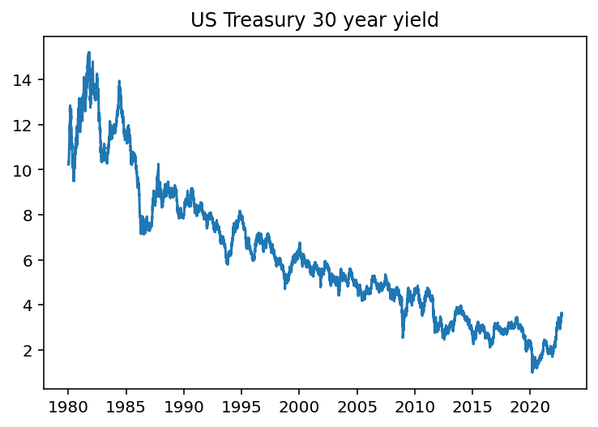

Code
from pandas_datareader import DataReader as pdr
import matplotlib.pyplot as plt
treasury30=pdr('DGS30', 'fred',start=1980)
plt.plot(treasury30)
plt.title('US Treasury 30 year yield')
plt.show()
A chapter about fixed income
<<<<<<< HEAD Some text tested by yh ======= ## Basic Concepts
A zero-coupon bond is a bond which doesn’t pay any coupons. It is issued at a discount and at expiration date, the investor gets the face value (par value) back. Spot rate is the discount rate which makes the present value of a zero-coupon bond to its current market price.
We will use semi-annual compounding for most of this chapter. Let N be number of semi-annual periods, \(C_{N}\) is the price of a zero-coupon bond with N semi-annual periods to maturity, \(r_{N}\) is the N period spot rate.
Then we have:
\[ Q_{N}= \frac{100}{(1+\frac{r_{N}}{2})^N} \]
\(r_{N}\) is the rate at which we should be using to discount cashflows from period N. If we know a collection of spot rate \(r_{1}\), \(r_{2}\)…\(r_{N}\), then we can price a bond with any cashflows by simply discounting each cashflow with the corresponding spot rate.
from pandas_datareader import DataReader as pdr
import matplotlib.pyplot as plt
treasury30=pdr('DGS30', 'fred',start=1980)
plt.plot(treasury30)
plt.title('US Treasury 30 year yield')
plt.show()
4794731284305c4c7d7cecbc8c1ea443cb2c345a